Recap
- We learned how to calculate stresses acting at any direction.
- We learned how to calculate the magnitude and direction of principal stresses, the mean stress, and the deviator stress.
- We learned how to locate the pole and solve problems graphically.
Contents
- Mohr-Coulomb model
- Friction and dilation
- Direct and simple shear test
- Triaxial test
- Strength of sands
- Strength of clay
Objectives covered in this lecture
- [O4]: Develop an understanding of stress state and shear strength of soils and its role in the overall stability of earthen systems.
After this lecture we will able to:
- To calculate drained strength properties for sand.
- To calculate drained and undrained strength properties for clay.
Mohr-Coulomb model
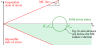
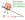
The \(c'\) between soil particles adds shear strength to the soil.
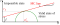
Soil Dilatancy
Loose sand
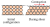
Dense sand
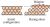
- \(\uparrow\) \(\implies \uparrow \phi'\)
- \(\uparrow\) \(\implies \downarrow \phi'\)
- Particle : \(\uparrow\) angularity \(\implies \uparrow \phi'\)
- \(\uparrow\) \(\implies \downarrow \phi'\)
- \(\uparrow\) \(\implies \uparrow \phi'\)
- controls base coefficient of friction.
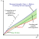
Effect of water on the shear strength
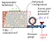
- Water can't scape the soil fabric.
- Shear occurs with \(\Delta V=0\) or .
- pore water pressure is generated.
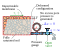
- Water drains instantaneously.
- Volume during shearing \(\Delta V \neq 0\).
- Excess pore pressure is not generated.
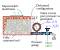
- If consolidation is faster than shear rate \(\implies\) and \(\Delta u \approx 0\).
- if consolidation is slower than shear rate \(\implies\) and \(\Delta u \neq 0\).
Drained vs. undrained in practice
Measuring shear strength of soils
Laboratory tests
- Direct shear test (DST).
- Triaxial test (TX).
- Direct simple shear test (DSS).
- Ring shear test.
- Laboratory vane shear test.
In-situ tests
- Standard penetration test (SPT).
- Cone penetration test (CPT).
- Vane shear test.
Direct shear test (DST)
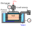
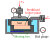
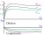
- At least needed.
- Can get shear stresses.
- Must results in \(\tau\) vs \(\sigma\) to get parameters.
DST data interpretation
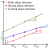
Example 9.4
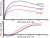
| \(\sigma'_n\) (psi) | \(\tau_p\) (psi) | \(\tau_s\) (psi) |
|---|---|---|
| 20.6 | ||
| 15 | ||
| 10.4 |
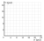
\(\tau=\sigma'_n\tan\phi'\). Minimize \(\sum\left(\tau-\sigma'_n\tan\phi'\right)^2\):
\(\tan\phi'=\dfrac{\sum\sigma'_n\tau}{\sum\sigma'^2_n}\) Least squares: the derivative of \(\sum(\tau-\sigma'_n\tan\phi')^2\) with respect to \(\tan\phi'\) is \(-2\sum\sigma'_n(\tau-\sigma'_n\tan\phi')\). Setting it to zero gives the slope of the best line through the origin.
\(\tan\phi'_p=\dfrac{\sum\sigma'_n\tau_p}{\sum\sigma'^2_n}=\) \(\phi'_p=\) \(^\circ\)
\(\tan\phi'_s=\dfrac{\sum\sigma'_n\tau_s}{\sum\sigma'^2_n}=\) \(\phi'_s=\) \(^\circ\)
Triaxial test (TX)
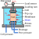
- Stage 1: \(\sigma_3\) all around. Drainage open \(\implies\) consolidated.
- Stage 2: axial stress at constant \(\sigma_3\) until failure, drained or undrained.
- \(\sigma_1\) is axial and \(\sigma_2=\sigma_3\): the are known.
Three flavors:
- Consolidated-drained (CD)
- Consolidated-undrained (CU)
- Unconsolidated-undrained (UU)
Drained triaxial test (CD)
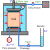
- Shearing stage: drainage valve and loading, so \(\Delta u \approx 0\) and \(\sigma'=\sigma\).
- Measured: load \(P\), displacement \(\delta\), \(\Delta V\), cell pressure \(\sigma_3\).
- Computed: \(\varepsilon_a=\delta/H_0\), \(\varepsilon_v=\Delta V/V_0\), \(A=A_0 \, (1-\varepsilon_v)/(1-\varepsilon_a)\).
CD triaxial data interpretation
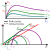
Example 9.5
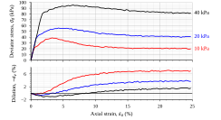
| \(\sigma'_3\) | \(\sigma_{d,p}\) | \(\sigma'_{1p}\) | \(\sigma_{d,c}\) | \(\sigma'_{1c}\) |
|---|---|---|---|---|
| 10 | ||||
| 20 | ||||
| 40 |
\(\sigma_m=\dfrac{\sigma'_1+\sigma'_3}{2}\), \(R=\dfrac{\sigma_d}{2}\); tangent: \(\sigma_m\sin\phi'=R\)
min \(\sum\left(\sigma_m\sin\phi'-R\right)^2\) \(\Rightarrow\) \(\sin\phi'=\dfrac{\sum s\,t}{\sum \sigma_m^2}\)
Strength parameters of sand
- \(\phi'_p=\) peak friction angle
- \(\phi'_s=\) secant friction angle
- \(\phi'_r=\) repose friction angle
- \(\phi'_c=\) critical friction angle
\(K_0\) formula
Analytical and empirical expressions have been developed for \(K_0\) as a function of the friction angle. These equations are often used to determine \(K_0\) for sand
\(K_0^{nc}=1-\sin \phi'_c\) \(\longrightarrow\) For NC soil (Jacky 1944)
\(K_0^{oc}=K_0^{nc} OCR^{0.5}\) \(\longrightarrow\) For OC soil (Meyerhof 1976)
Typical values of sand parameters
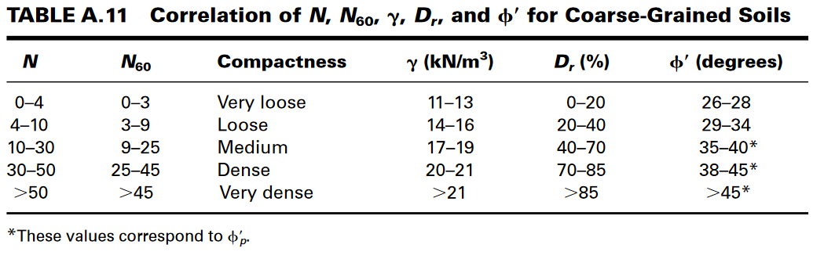
Drained strength of clay
N.C. clay
For normally consolidated clay \(c'=0\).
Heavily O.C. clay
For overconsolidated clay, cohesion is observed. This cohesion is not necessarily due to cementation but due to suction during dilation.
Undrained strength of clay
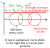
The undrained shear strength \(S_u\) is defined with \(\phi=0\):
Where:
\(k=\) Constant between 0.23-0.31
\(b \approx 0.8\) Constant
Typical values of undrained shear strength as a function of soil consistency and SPT results.
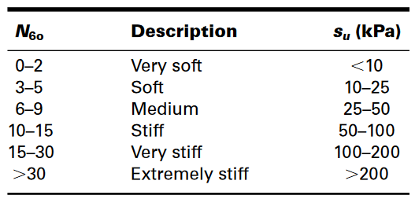
- Slope stability analysis
- Shallow and deep foundations
- Tunneling
- Deep excavations

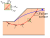
Example 9.6
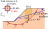
\(\sigma_n=\dfrac{\sigma_x+\sigma_y}{2}+\dfrac{\sigma_y-\sigma_x}{2}\cos2 \alpha+\tau_{xy}\sin2 \alpha\)
\(\sigma_n=\) \(=\) \(\unit{kPa}\) Clockwise shear: \(\tau_{xy}=-15\unit{kPa}\), as in Example 9.1
\(\tau_m=\dfrac{\sigma_y-\sigma_x}{2}\sin2 \alpha-\tau_{xy}\cos2 \alpha\)
\(\tau_m=\) \(=\) \(\unit{kPa}\)
\(\sigma'_n=\sigma_n-u=\) \(=\) \(\unit{kPa}\) Water can't carry shear stress, only normal stress changes
\(\tau_f=c'_p+\sigma'_n\tan\phi'_p=\) \(=\) \(\unit{kPa}\)
\(\tau_m=\) \(\unit{kPa}\)
\(FS_p=\dfrac{\tau_f}{\tau_m}=\) \(=\) \(m\) stands for mobilized shear stress at the base
\(\tau_f=\sigma'_n\tan\phi'_c=\) \(=\) \(\unit{kPa}\)
\(\tau_m=\) \(\unit{kPa}\)
\(FS_c=\dfrac{\tau_f}{\tau_m}=\) \(=\) Use \(\phi'_c\) with \(c'=0\) for large deformations
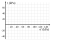
\(\sigma'_x=\) \(=\) \(\unit{kPa}\)
\(\sigma'_y=\) \(=\) \(\unit{kPa}\)
\(\sigma_m=\dfrac{\sigma'_x+\sigma'_y}{2}=\) \(\unit{kPa}\)
radius \(=\sqrt{\left(\dfrac{\sigma'_y-\sigma'_x}{2}\right)^2+\tau_{xy}^2}=\) \(\unit{kPa}\)
\(\sigma'_{1,3}=\text{centre}\pm\text{radius}=\)
\(\sigma'_1=\) \(\unit{kPa}\) \(\sigma'_3=\) \(\unit{kPa}\)
\(\sigma=\sigma'+u\): \(\sigma_1=\) \(\unit{kPa}\) \(\sigma_3=\) \(\unit{kPa}\)
\(n=\dfrac{1}{2}\arctan\left(\dfrac{2\tau_{xy}}{\sigma_y-\sigma_x}\right)=\) \(=\) \(^\circ\) \(\sigma_1\) acts on this plane; \(\sigma_3\) on the plane at 79.7°
What's next?
Geotechnical engineering is a fascinating discipline of Civil Engineering. It is a challenging and rewarding profession.
You have completed your first course in geotechnical engineering. CONGRATULATIONS!!!
how can I know more about GE?
- CE 443: Engineering Geology
- CE 444: Seepage, Earth Embankments, and Retaining Structures
- CE 445: An Introduction to Foundation Engineering
- More at Graduate Level Courses